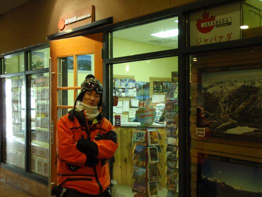
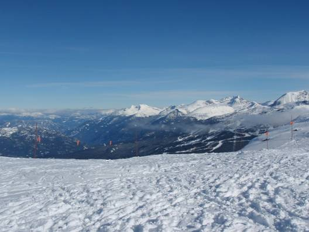

□2日目(2/13)Squamish⇔Whistler (1)
朝起きると気持ちの良い青空が広がっていた。遠くには真っ白の雪山が見えている。ウィスラーまでの道路は、路肩の雪壁は大きいが、除雪は完璧。やはり工事は何箇所も行われていた。交通量はそれなりに多い。Sea to
Sky Hwy.で海から山へとやってきた。ワインディングロードを1時間程走るとWhistler
Village(ウィスラー･ビレッジ)に到着。

まずはジャパナダエンタープライズという会社の事務所に行き、リフト券を購入する。受付の人は日本人で、日本語で話しができホッとした。レンタカーでイエローナイフまで行くと言ってみたら無理なんじゃないかと言われた。カナダに住んでいる人でも冬に車でイエローナイフは無茶なことだと考えるのだろうか。

Whistler
Village Gondola(ウィスラー･ビレッジ･ゴンドラ)に乗り、いよいよゲレンデへ！ウィスラーのスキー場は標高2182mのMt. Whistler(ウィスラー山)と、2440mのMt. Blackcomb(ブラッコム山)の二つの山に分かれている。初日はウィスラー山、2日目はブラッコム山で滑り、3,4日目は両山で滑ろうと言う計画だ。ゴンドラには詰め込まれたという感じで少し狭かったが、ゴンドラの速度はかなり速い。あっという間に眼下に見えるウィスラービレッジが小さくなっていく。ゴンドラを降りると、空気中にキラキラと輝くものが！ダイヤモンドダストである。気温は約-15℃。雪はサラサラとパウダーの様。足で蹴ると雪がふわっと舞い上がる。広大なゲレンデが広がり、遠くには雪山が延々と連なるのが見渡せられる。北緯約50度と高緯度にあるため、この時期は昼間でも太陽が高くまで上がらない。それでもゲレンデの雪は純白に輝いていた。


記念写真をとった後、いよいよ滑走開始！ターンをするたびにパウダースノーが舞い上がる最高のゲレンデを堪能し、ウィスラー山の上部へと向かう。クワッドリフトは間隔もスピードも快適な速さがある。山頂が近づいてくると樹木の高さは低くなり、やがて森林限界を迎える。それより上部はRock＆Snowの世界が広がる。山頂付近は”Bowl”(ボウル)と呼ばれる圏谷が多数存在し、ある程度上級者なら、広大なBowlエリアを好きな所から自由に滑降することができる。CrazyなExpertとなると、ほとんど崖のような所を滑っている。驚きなのはちゃんとマップや看板にExpert
Trail(最上級者コース)として掲載されていることだ。

ウィスラー山は山頂までリフトで行くことが可能。ここからは360°のすばらしいパノラマビューが拝める。バンクーバー五輪のシンボルマークにもなっている石を積み重ねてできたInukshuk(イヌクシュク)もある。イヌクシュクはカナダの先住民族に伝わるものだそうだ。山頂からは一気に麓のCreekside(クリークサイド)へ標高差1530mを一気に滑り降りる！このコースは全体が中級者クラスで、爽快なスピードで滑走ができる。しかし、中級者コースといえども、所々にコブ斜面が存在する。斜度はそれほど大きくはないので、コブのいい練習になり、そのうちコブ斜面が楽しくなってくる。距離が長く、変化に富んでいるコースでオススメ！


昼食は麓のレストランへ。少し値段が高いなと思ったが、バーガー類を1人1品ずつ、サラダを4人で1品注文。その結果、唖然とした。セットとは書かれていなかったが、特大のハンバーガーだけではなく、大量のフライドポテト、サラダがそれぞれに付いていた。共同で注文したサラダも大皿にテンコ盛りになっていて、チキンもその上に大量に載っていた。もちろんすべて完食したが、スキーをするには満腹すぎる程。味は申し分なし。十分すぎるほど満足できた。これがカナディアンスタンダードなのか。昼食後も広大なウィスラー山のゲレンデを堪能した。特に森林限界を超えたエリアでの滑走は、本当に気持ちがいい。


スキー終了後はスーパーマーケット巡り。目当てはイクラ。しかしウィスラー･ビレッジのスーパーにもスコーミッシュのスーパーにもイクラはなかった。生肉やハムは豊富な種類が大量に並べられているが、魚介類は種類が少ない。そんな中、生サーモンとスモークサーモンを購入。今宵の晩餐は、醤油漬けにした生サーモンと、焼いたスモークサーモンのWサーモン丼！とろけるような食感と香ばしい風味が最高だった。この他に、パンプキンスープとカニカマサラダを食べた。スープに使用した”Butter
Milk”(バターミルク)が普通のミルクではなく、飲むヨーグルトのような酸味のあるものだったため、酸っぱいスープに。微妙な味。ちなみにカニカマは英語で”Imitation
Crab”。カナダにもカニカマがあるとは思っていなかった。